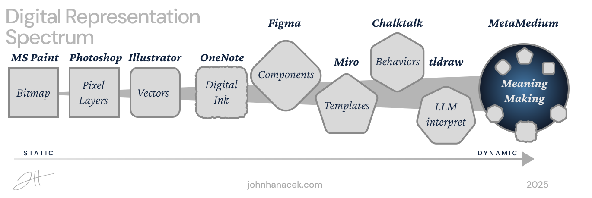
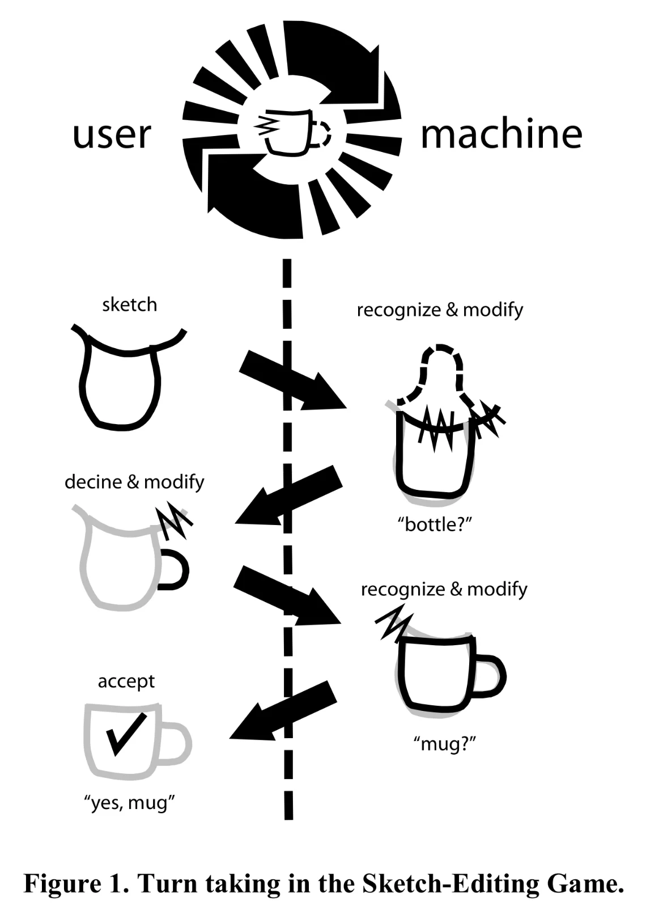
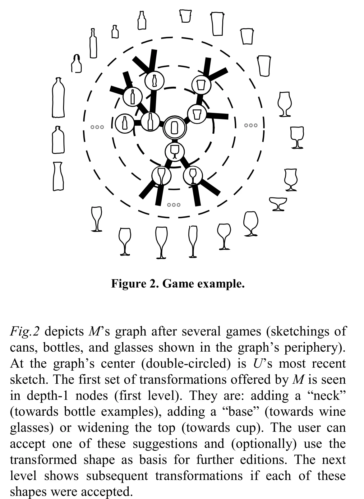
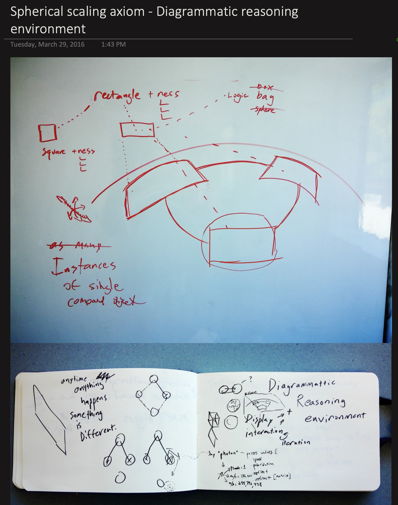

Overview
MetaMedium is a framework, a working engine and a reference surface for a new kind of human-AI interface: one where you draw instead of type, and the canvas reads your marks as meaning, not pixels. Draw a circle and it is recognized, measured, and offered back clean. Put shapes near each other and the relations between them are read. Name a pattern and the canvas learns your vocabulary. A model joins the reading as a participant that proposes and never commits.
The core idea: AI can function as a meta-word — a new linguistic element that transforms rough marks into structured meaning based on context. This turns drawing into a shared language between human and machine, where a seven-year-old's sketch and an engineer's diagram can coexist on the same canvas, each interpreted at its own level of abstraction.
The Problem
Simulating Inert Drawing On The Dynamic Medium
Today's drawing tools, from Illustrator to OneNote, treat drawings as pixels or vectors, not as meaning. Illustrator knows a circle's geometry but not what it stands for. OneNote captures your marks and never interprets them. Procreate's strokes stay forever inert.
Even Figma and Miro treat diagrams as layout, not computation. You can draw a flowchart, but the arrows do not flow. You can sketch a state machine, but it does not run. The computer records what you drew without understanding what you meant.

This is the dead drawing problem: our most natural form of expression remains computationally inert. We have given computers eyes, ears and a voice, but not the ability to think with us through drawing.
The Communication Bottleneck
We stand at an inflection point. Large language models have achieved remarkable capabilities in reasoning, generation, and conversation. Yet we interact with them through text boxes—the equivalent of trying to share a symphony by describing it in words.
The bottleneck is not AI capability but symbolic bandwidth: the poverty of sign vehicles available for exchange. We have rich internal representations and a text box for an output channel. A visual thinker translating spatial intuition into prompts, a designer describing a sketch in words, a child linearizing exploratory understanding into queries: each loses the richness that makes human cognition powerful.
This matters for more than productivity. Text-based interfaces privilege certain cognitive styles and educational backgrounds. A child who thinks in pictures, a craftsperson who thinks with their hands, an elder who thinks in stories: all are excluded from full partnership with computational intelligence.
"In a few years, men will be able to communicate more effectively through a machine than face to face." — J.C.R. Licklider & Robert Taylor, "The Computer as a Communication Device," 1968
Their prophecy has come true for text. We already have richer languages: drawing, gesture, spatial arrangement, annotation, demonstration. We need interfaces that honor them.
The Vision: As We May Sketch
In 1945, Vannevar Bush imagined the Memex—a device for extending human memory and enabling associative thinking. He asked: As we may think, how might machines augment the trails of connection that constitute human understanding?
We ask the parallel question: As we may sketch, how might machines augment the visual, spatial, gestural thinking that constitutes so much of human cognition—especially in children, who draw before they write, who think in pictures before they think in propositions?
Anything digitized has become an abstraction, so let's embrace it. When I draw into a computer with the flourish of my hand, we can take it beyond pixels, beyond even vectors, toward universal mapping attempts, toward a truly metamedium. — John Hanacek, "As We May Sketch," Georgetown CCT Masters Thesis 2016
A curve drawn by hand is a chance to try fitting a function to the line. A function is just waiting to become metaphorical graphics. Digital ink will move beyond "networked paper" to become a magical plane where computer vision partners with the human hand functioning as an interactive external imagination. From sketch to code, from code to sketch—no longer a pipeline but rather a constellation of possibilities, an ever-expanding network of opportunities to map expressiveness and flow to logic and math directly.
Dancing Without Music
"Imagine that children were forced to spend an hour a day drawing dance steps on squared paper and had to pass tests in these 'dance facts' before they were allowed to dance physically. Would we not expect the world to be full of 'dancophobes'?" — Seymour Papert, Mindstorms, 1980
Papert's question cuts to the heart of how we teach abstraction. We have raised generations of "mathphobes": people who believe they are bad at math while routinely using logical reasoning to fix computers, build furniture and run businesses.
The problem is not aptitude. We ask people to dance without music: to manipulate symbols divorced from meaning, to learn the steps before they feel the rhythm. A child with an intuitive sense for assembling things in space may never connect school geometry with building.
Give that same person constant feedback, immediate results, symbol connected to meaning through direct manipulation, and they discover they were never unable to do math. They were never shown the connection.
A Medium for Children
"The child is a 'verb' rather than a 'noun', an actor rather than an object... We would like to hook into his current modes of thought in order to influence him rather than just trying to replace his model with one of our own." — Alan Kay, "A Personal Computer for Children of All Ages," 1972
Children don't need to learn to code before they can think computationally. They already think in systems, in cause and effect, in "what happens if." They need interfaces that meet them where they already are—drawing, playing, exploring. The MetaMedium is that interface: a space where a child's sketch of a "bouncy house" contains the seeds of structural engineering, where doodled spirals become gateways to mathematical beauty, where the native language of visual thinking connects directly to computational power.
The Lineage
The MetaMedium does not emerge from nothing. It stands on decades of research into human-computer interaction, sketch-based interfaces, and computational media. Understanding this lineage helps clarify what is genuinely new and what builds on proven foundations.
- From Visions: Dynabook's metamedium concept + Victor's directness principle
- From Recognition: Sketch-editing games' negotiation paradigm
- From Intelligence: LLM interpretation + probabilistic reasoning
The Thesis: AI as Meta-Word
Closing the Triadic Loop
Current human-computer interfaces connect Language and Computation, but leave Meaning external to the loop. We write code; machines execute. Machines return outputs, displays, text. But there is no continuous Language ↔ Computation ↔ Meaning feedback loop. The computer cannot participate in meaning-making—it can only execute instructions and return results.
Traditional interfaces flow one way: we write, machines execute, outputs return. Meaning remains external.
The MetaMedium closes this triad. When every mark can mean multiple things, when the system holds probabilistic interpretations and refines them through exchange, meaning becomes part of the computational loop—not something that happens only in human minds before and after the interaction.
AI as Meta-Word
The MetaMedium proposes that AI can function as a new kind of meta-word within an evolution of language itself. Just as written language externalized memory, allowing us to store and retrieve thoughts across time and space, AI externalizes interpretation—the capacity to generate meaning from marks in context.
What Is a Meta-Word?
A meta-word is not a word about words (like "noun" or "verb"). It's a word that transforms other words—that takes your rough marks and interprets them into structured meaning based on context. When you write "bounce" near a spring, the meta-word doesn't just read "bounce"—it understands spring + bounce = physics behavior and makes it so.
In traditional communication, humans exchange sign vehicles (words, gestures, marks) and each party reconstructs meaning internally. The MetaMedium introduces AI as an active participant in this meaning-making process—not merely receiving marks and returning responses, but operating as a semantic transformer that:
- Recognizes patterns across multiple possible interpretations
- Holds ambiguity productively until context resolves it
- Learns user-specific vocabularies and reasoning patterns
- Bridges between representational modes (sketch ↔ equation ↔ code ↔ text)
This is not AI as tool. This is AI as grammatical element—a new part of speech in the language of human-computer collaboration.
"Thanks to a mapping, full-fledged meaning can suddenly appear in a spot where it was entirely unsuspected." — Douglas Hofstadter, I Am a Strange Loop, 2007
Thinking as Conceptual Blending
What is human thought anyway? Gilles Fauconnier and Mark Turner attempted to answer this with their theory of conceptual blending, building on Lakoff and Johnson's work on how metaphor structures understanding. Consider a riddle:
A Buddhist monk begins at dawn walking up a mountain, reaches the top at sunset. After several days, he walks back down, starting at dawn and arriving at sunset. Is there a place on the path he occupies at the same hour on both journeys?
The answer becomes obvious the moment you visualize two monks walking the path simultaneously—one going up, one going down. They must meet somewhere. But this visualization requires what Fauconnier and Turner call an "integration network"—a blended mental space where separate inputs combine to reveal emergent structure. I have animated their central figure illustrating the blending space as a diagram.

The MetaMedium is a system for building integration networks on a canvas. When you draw a diagram, you are setting up mental spaces. When you connect elements with arrows or proximity, you are creating cross-space mappings. When the AI interprets your marks and offers possibilities, it is helping locate shared structures. Diagrammatic thinking externalizes the blending process—making it visible, manipulable, shareable. Two people looking at the same diagram can point to the same conceptual space.
Tools vs. Medium
Alan Kay's Dynabook vision asked: "What is the carrying capacity for ideas of the computer?" His answer: the computer is a metamedium—it can simulate any existing media and also be the basis of media that can't exist without the computer. But Kay made a crucial distinction:
"What then is a personal computer? One would hope that it would be both a medium for containing and expressing arbitrary symbolic notions, and also a collection of useful tools for manipulating these structures." — Alan Kay, "A Personal Computer for Children of All Ages," 1972
Most AI interfaces treat AI as tool—something to be invoked, queried, commanded. The MetaMedium treats AI as part of the medium itself. The sketches aren't using the computer; they're composing within the computational medium, with AI as an active interpretive layer that transforms marks into executable meaning.
The Loop, Recorded
This is the canonical loop, run once through the engine and recorded as the events it produced. What you step through below is not a video: it is the engine replaying its own log in your browser, and the inspector on the right holds every reading at every step. Draw on it at any point and the recorded session continues with your marks.
Try It: Draw, Name, Interact
This is the core loop in miniature. Draw a shape, and the system recognizes and names it. Draw another, and it gains behavior. Your marks become meaning — and meaning becomes interaction.
The Framework
Core Principles
Space Is Semantic
Spatial relationships carry meaning. Near means related; a line means a directed relation. Position, proximity and connection are first-class citizens of meaning.
Place two circles close together; the system infers "related." Draw one inside another; it understands "containment." Position creates meaning without words.
Built. Nearness, insideness, alignment and direction are measured as ratios of the marks' own size, carry a strength, and are what the palette offers from and the model is briefed with.
Annotation Becomes Execution
Write "make this bounce" beside a spring and the note is an instruction. Draw an arrow from input to output and you have defined a flow. To describe is to instruct.
Write "3x" next to a line; it becomes three lines. Write "wiggle" near a shape; it animates. The annotation is the program.
Partly. A word written beside a shape is read and offered as its name; a prompt on a circled group builds a page in place, and ink on that page addresses the region under it. “3x” and “wiggle” are still vision.
Interpretive Ambiguity Is Feature
A rough sketch is understood as rough. The system holds several interpretations and refines them as context accumulates, the way people tolerate ambiguity and resolve it over time.
Your rough oval might be a face, an egg, or a zero. The system holds all three until you add two dots—then it commits to "face." Premature disambiguation is the enemy of exploration.
Built. A mark holds every reading that qualifies, ranked by measured confidence. A pentagon is rectangle and circle at once, and is redrawn clean as neither.
Bidirectional Learning
The system learns your vocabulary and conventions into a cognitive lens, and teaches you back by surfacing patterns and suggesting relationships. Your idiolect becomes executable; its interpretations become visible.
Draw "recursion" shorthand repeatedly; the system learns it. Later, it suggests this mark when detecting recursive patterns—teaching you to see what it sees. Your notation becomes shared language.
Partly. Draw your command mark five times and it becomes yours; name a group and the next one like it is recognized. Lenses beyond that are not built.
No Mode Switching
Following Larry Tesler's "no modes is good modes": you are always just working, drawing, annotating, refining. Interpretation appears when needed and fades when not.
Draw a shape. Write near it. Adjust with gestures. Watch it execute. All the same canvas, all the same moment. The interface disappears into the work.
Built. Selection, command and erase are marks: a loop is a lasso, your mark across it summons, a scratch erases what it crosses. There is no mode to be in.
Observable Reasoning
Uncertainty is visible. When several interpretations are held you see them, not a single guess, and they stay present until context or your choice resolves them.
Your rough mark triggers three possible interpretations shown as faint ghosts; tap one to commit, or keep drawing to refine. You see the system thinking.
Built. Every reading names the measurement it rests on; a confident one ghosts its clean form under the ink; an inspector walks any mark from ink to shape to role to code.
The Negotiation Paradigm
Ribeiro and Igarashi's "Sketch-Editing Games" (UIST 2012) introduced a negotiation paradigm where user and machine take turns refining interpretation. The user sketches; the machine recognizes and offers interpretations ("bottle?"). The user refines ("no, more like a mug"). The machine updates. Understanding emerges through iterative exchange.


Their key insight: sketch recognition improves dramatically when reframed as a game rather than a classification problem. The machine maintains a "possibility graph"—a network of possible interpretations and the transformations that would select among them. The user's next stroke navigates this graph, collapsing some possibilities and opening others.
The MetaMedium makes the possibility graph learnable, accumulating your patterns over time, and adds annotation as another way to navigate it. Misunderstanding is not failure; it is information. Each correction builds toward a shared vocabulary.
The Semiotic Foundation
Charles Sanders Peirce's semiotics offers a framework for understanding meaning-making that proves remarkably apt for human-AI interaction. In Peirce's model, meaning emerges from the relationship between the sign (the representational form), the object (what is represented), and the interpretant (the meaning generated in the interpreter's mind).
Peirce's insight—that meaning is reconstructed, not transferred—maps directly onto the Language ↔ Computation ↔ Meaning triadic loop described earlier. The MetaMedium enables this iterative coordination by letting AI participate as interpretant, holding probabilistic meanings that refine through exchange rather than executing fixed commands.
Cognitive Lenses
As patterns accumulate, they form "cognitive lenses"—personalized interpretation frameworks that shape how the system reads new marks. A physicist's lens recognizes force diagrams; an architect's lens sees load-bearing structures; a musician's lens interprets spatial arrangements as rhythm.
Lenses are not just personal—they can be shared, creating communities of interpretation. A research group might develop a shared lens for their domain notation. A classroom might inherit a lens from curriculum designers. Lenses become a new kind of intellectual property: not content, but ways of seeing.
Current Development
A working engine and a reference surface accompany this paper. You draw on an infinite canvas; the canvas reads what you drew; a model joins the reading as a participant rather than an oracle. Every mark climbs three rungs, each a closed vocabulary you can inspect:
- Shape: what the stroke is. Line, arc, triangle, rectangle, circle, arrow, writing, dot. Every reading is measured from the ink and carries its reason; several are held at once. A confident one is offered back as its clean form, drawn over the ink, never in place of it.
- Diagram: what the mark plays. Container, node, edge, label, annotation, placed from measured relations, so a drawing has a genre: boxes tiling a space are a page, nodes joined by edges are a graph.
- Code: what it becomes. A page compiles to flexbox that reflows, your ink still outlining its elements; a graph keeps its positions and arrows. The engine owns the structure it measured; a model writes only the content, briefed by the drawing.
Selection and command are marks too. Circle a group, cross it with a command mark you taught by drawing it five times, and a palette offers what those marks could become, starting with what needs no model. Handwriting beside a shape is read by a model that can see and offered as the shape's name. The model can draw back, in the shapes the canvas can read, its marks held in its name beside yours.
The loop the product is built around, recorded once against a local eight-billion-parameter model and replayed here by the engine: four boxes become a page inside the ink, and a mark drawn on the running page changes only the region it lands on.
And the surface itself, live. Everything here works offline; join a local model in the full page to build, read handwriting, or have it draw.
Demo & Source
Everything above works offline; joining a local model (Ollama or LM Studio) or a hosted one by key adds the reading, building, handwriting and drawing that need one. Development continues in the repository.
Reference surface: jjh111.github.io/MetaMedium/Demos/session-engine.html
Earlier prototype (2025): doodle2-canvas.html — heuristic recognition, a learned library, and the geometry of what you drew read out as maths
GitHub: github.com/jjh111/MetaMedium
License: GPL — the MetaMedium framework is open source.
Development Roadmap
- Built: the engine and the three rungs; selection, command and erase as marks; living artifacts that ink can address; local and hosted models as participants; handwriting; the model drawing back.
- Next: words from printed letters; the model proposing library entries for the human to bless; recall by meaning; this surface as the flagship.
- Then: multi-user canvases; cognitive lens export and import; a model outside the browser taking part through the same channel.
Open Questions
The MetaMedium framework raises questions that can only be answered through building and testing:
- How do we design for "interpretive ambiguity" without creating confusion? What's the right balance between holding possibilities open and committing to interpretation?
- What are the limits of gesture vocabulary before cognitive overhead exceeds benefit? How many "words" can a visual language productively contain?
- How can "cognitive lenses" be effectively shared between users? What's lost in translation when one person's way of seeing meets another's?
- What patterns emerge in human-AI co-creation that neither intelligence generates alone? Can we characterize genuinely collaborative cognition?
- Can visible reasoning on a shared canvas measurably improve AI alignment outcomes? This is empirically testable.
Limitations and Challenges
- Recognition is bounded, not solved: the engine reads eight shapes and one cursive stroke per word; everything past that vocabulary is held as "art" until a model or the human says otherwise. The negotiation paradigm turns each miss into a correction, but too many corrections and people stop drawing.
- Cognitive load: Every gestural vocabulary is a language to learn. There's a real risk that MetaMedium becomes its own expertise barrier, replacing "learn to code" with "learn our gestures." Keeping the learning curve gentle while enabling power is a design challenge.
- Privacy of patterns: If the canvas learns from your drawing patterns, those patterns become data. "Cognitive lenses" are intimate—they encode how you think. The system must be designed with privacy as foundational, not afterthought.
- Over-automation risk: "The system guessed wrong and did something I didn't want" is a real failure mode. Undo must be instant and obvious. Interpretations must be inspectable before they execute. The user must remain in control.
- Evaluation difficulty: How do we measure success? Traditional usability metrics may not capture "quality of thought." New evaluation frameworks are needed.
Abstraction Management and Learning Dynamics
A canvas that learns creates its own problems. Vocabulary accumulates and nothing forgets, so old notations compete with new ones. Worse, a system well fitted to your previous way of thinking may resist your attempts to evolve, correcting you back toward familiar patterns just when you are trying to break a frame. Possible mitigations include explicit unlearn gestures, decay with different rates for core and peripheral vocabulary, versioned lens snapshots, and treating systematic deviation as a signal. The deeper question remains: is the canvas a memory of what you have done, or a partner in what you are becoming?
Gallery

Scenarios
The framework becomes concrete through scenarios. Each demonstrates specific principles in action.
Visual Learning
Principles: Space is semantic, Canvas learns, Bidirectional representation
Visual thinker draws parabolas; system connects spatial intuition to formal equations bidirectionally. Discovers he understood calculus all along—just needed symbols connected to drawings. Read Story
Asymmetric Collaboration
Principles: Interpretive ambiguity, Cognitive lenses, Negotiation
Seven-year-old's playful "bouncy bridge" sketch becomes engineering student's seismic dampening simulation. Canvas holds both interpretations—intuitive play and rigorous analysis—without translation. Read Story
Rapid Prototyping
Principles: Annotation becomes execution, Negotiation paradigm
Non-programmer sketches water tanks, annotates flow logic. System generates simulation, asks clarifying questions, updates as she refines. Continuous negotiation from rough idea to working prototype—no code. Read Story
Scientific Collaboration
Principles: Space is semantic, Annotation becomes execution, Shared lenses
Researchers sketch faster than formal notation allows. Spatial annotations like "defect here?" trigger simulations. Shared research lens interprets their shorthand. Read Story
The Future
External Imagination
The human's role is navigator, conductor, explorer, friend to possibility: knowing which possibilities matter. The AI holds many possibilities at once. It becomes an external imagination, thinking with the human rather than for them. Not automation, not replacement: augmentation.
"Artificial" carries the wrong connotations: fake, simulated, lesser. Human intelligence is embodied, temporal, mortal, shaped by survival. Machine intelligence is computational, distributed, instant, shaped by training and direction. Both are real. The question is not which is better but how they combine into a capability neither has alone.
Alignment Through Communication
Most approaches to alignment focus on control: rules, guardrails, constraints, on the assumption that the machine's goals might diverge from ours. The MetaMedium proposes an alternative: enrich the medium between us so that coordination happens through communication. The richer the shared vocabulary, the better we can align our understanding.
This is not naive trust; it is a different theory of coordination. We coordinate with other people not by controlling their thoughts but by sharing a rich medium for exchange. The canvas becomes that medium: two intelligences, each contributing what it does best, with their reasoning visible to both.
Beyond 2D: Navigating Conceptual Space
The current framework treats diagrams as 2D arrangements, but diagrams are projections of higher-dimensional conceptual space. Future development could explore navigating the space a diagram lives in—not just the diagram itself. Three-dimensional visualization would give canvas elements depth: z-axis as semantic distance, uncertainty, or abstraction level. Four-dimensional (temporal) visualization would make the evolution of understanding navigable—scrub through versions, see where insight branched, experience collaborative history as visible geology.
Most speculatively: latent space rendering. AI models maintain high-dimensional embedding spaces that encode meaning. What if the canvas could project these spaces, letting users see where their current sketch sits relative to possible interpretations? The "possibility graph" becomes navigable terrain; your marks become waypoints through semantic space.
The Deeper Vision
There is a version of this vision that goes beyond interface. Today's computing is an archaeological site: layer upon layer of abstraction, each solving problems created by the layer below, each adding distance from what the machine does. Bret Victor's "Future of Programming" reminds us that direct manipulation, visual programming and goal-directed systems were explored in the 1960s and then buried under commercial code and decisions no one remembers. Now AI arrives, and we add more layers.
The deeper vision goes the other way: the computer knowing what it can do and doing only as much as it needs to, every operation justified, every layer earning its existence. AI could be the tool for this, reading the whole stack and finding the essential operations under the accretion. On the canvas, interpreting a sketch could mean "generate Python", or it could mean "this is a constraint problem; here is how it maps closer to the metal." The diagram negotiates the level of abstraction the thought requires.
The metamedium dream waits beneath the APIs and the bloat, patient, ready to be excavated. The tools to dig are finally arriving.
Conclusion
The MetaMedium represents both a technical framework and a philosophical position about the future of human-AI interaction. Its core claim is simple: we have been limited not by AI capability but by interface bandwidth. The medium between human and AI has been too impoverished to support genuine collaboration.
By making every mark a potential sign vehicle, every spatial relationship a semantic statement, every annotation an execution—we create conditions for a new kind of partnership. The computer has always been a metamedium capable of simulating any other medium. AI has become capable of interpreting and generating across modalities. The missing piece is the interface that lets humans bring their full cognitive richness into the collaboration.
We should not have to type our thinking into a box. An interface can meet us where we think: on a surface where a mark is a proposal, where the machine's reading is visible and arguable, and where the two of us are building the same drawing.
The MetaMedium is that interface. The engine accompanying this paper reads a drawing, redraws it clean, measures it, compiles it, reads the writing on it, and lets a model draw back in marks the human can read on the same terms as their own. What it does not yet do is listed above as plainly as what it does. Development continues. Contributions welcome.
It's time to bring the computer to life at the depth of mind with the speed and intuitive action of our hands.